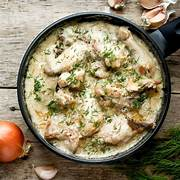

MALAI_CHICKEN

DESCRIPTION
Malai Chicken is a rich, creamy, and mildly spiced dish known for its silky texture and delicate flavors. Made with tender chicken marinated in yogurt, fresh cream (malai)
\, and aromatic spices, it has a luscious, melt-in-the-mouth consistency..
INGREDIENTS
- 500g boneless chicken (cubed)
- ½ cup yogurt
- ¼ cup fresh cream (malai)
- 1 tbsp ginger-garlic paste
- 2 tbsp cashew paste (optional)
- 1 tsp garam masala
- ½ tsp turmeric
- 1 tsp
black pepper powder
- 1 tbsp lemon juice
- 2 tbsp butter/ghee
- 2 green chilies (slit)
- 1 tbsp chopped coriander
PROCEDURE
- Marinate Chicken – Mix chicken with yogurt, cream, ginger-garlic paste, cashew paste, turmeric, black pepper, garam masala, lemon juice, and salt. Let it rest for 1 hour.
- Cook – Heat butter in a pan, add marinated chicken and green chilies. Cook on medium heat until tender and creamy.
- Garnish & Serve – Sprinkle coriander and serve hot with naan or paratha! 🥘✨